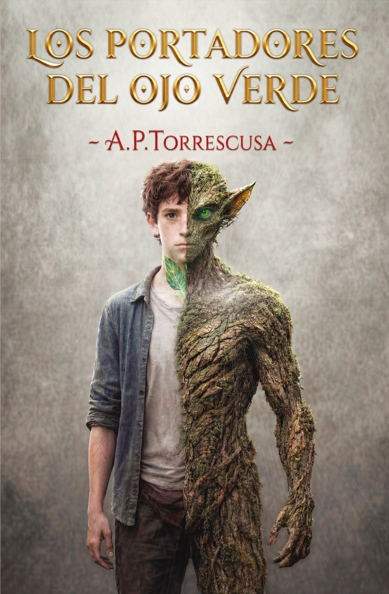

Obras Publicadas
Adquiere tus ejemplares

Poemario
El amor del fénix
Un viaje íntimo de cenizas, combustión, renacimiento y vuelo. Un poemario sobre resiliencia que demuestra que siempre es posible volver a empezar.

Novela Fansatía
Los Portadores del Ojo Verde
Fantasía con realismo mágico en un bosque vivo. Unai, joven marcado con el enigma, emprende un viaje para salvar Monte Redondo recuperando Las Trufas Doradas.